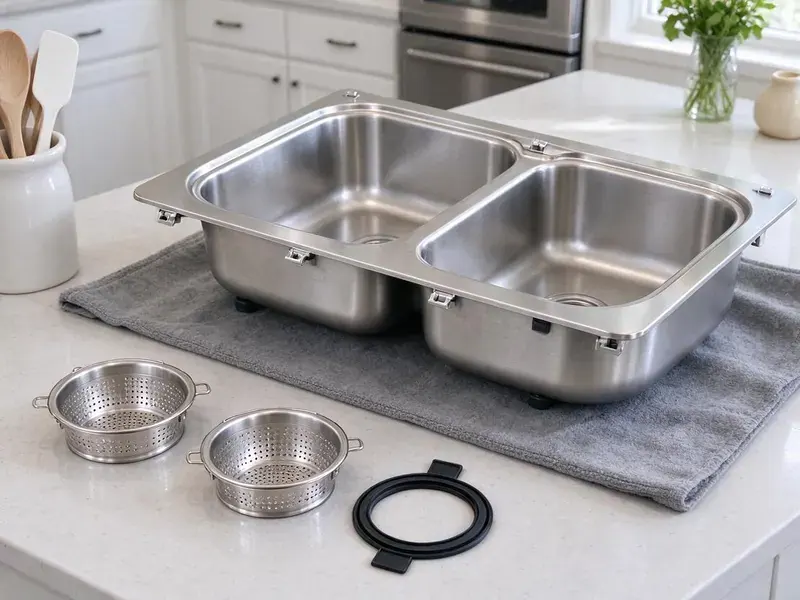

Kitchen Sink Installation in Cincinnati, OH
Replacing an old basin? We install kitchen sinks of every style in Cincinnati, OH with tight drains and proper support.
- Farmhouse and Undermount Specialists
- Install Day Set Around Your Counters
- Disposal and Dishwasher Connections
- Experienced Plumbers
Ready for a New Kitchen Sink in Cincinnati, OH?
Call with your sink model and we will give you a clear installed price.
Kitchen Sinks Set and Plumbed in Cincinnati, OH
HRL Plumbing handles the plumbing whether your new sink is a straight swap or part of a full remodel in Cincinnati. A rushed install is where most leaks come from. We take the time to set the strainers in putty, align the trap without forcing it and test both bowls full.
Work we handle every week:
- Disposal and dishwasher tie-ins
- Old sink removal and haul-away
- Undermount, farmhouse, drop-in and workstation bowls

Additional Kitchen Plumbing Services in Cincinnati, OH
Our kitchen plumbing services in Cincinnati, OH cover sinks, disposals, dishwashers, and grease traps so your kitchen stays clean, safe, and fully functional.


Customers
Why Choose HRL Plumbing for Kitchen Sink Installation in Cincinnati, OH?
Our plumbers know how Ohio homes are framed and plumbed. It affects how we set the sink. Older houses often have a wall stub set too high for a deep new bowl, and we lower it so the trap drains properly instead of holding water.
- Local Experience, Our plumbers know the water pressure and piping common in Cincinnati homes and plan each install around it.
- Solid Materials, Schedule 40 traps, braided lines and brass stops instead of bargain parts.
- Clean Drain Layout, Traps and waste lines are laid out to keep cabinet space usable under the sink.
Citywide Coverage
From houses out past town to condos downtown, our licensed plumbers install kitchen sinks across Cincinnati. Condo jobs differ a bit. Many share a drain stack with the unit below, so we check the shutoff situation and building rules before we cut any water.
Experienced Team
Plumbers at HRL Plumbing are trained in every part of kitchen plumbing, including heavy and unusual sinks. Two of them come for cast iron. They keep the area clean, protect the counters and floor, and leave the cabinet as they found it without the old sink.
Safety-First Approach
Every install includes a properly vented trap and an air gap or high loop on the dishwasher drain, as Ohio plumbing code requires. Fittings on drinking water are lead-free. We confirm the trap seal depth too, because a shallow trap can dry out and let sewer smell back into the kitchen.
Trusted Certified Cincinnati Plumbing Services Professionals
At HRL Plumbing, we are proud to offer certified plumbing services throughout Cincinnati, OH. Credentials matter in this trade. Our plumbers hold recognized industry credentials, and they follow strict safety and quality rules on every repair, installation and maintenance call we run.
Call Us Now PHCC Plumbing Contractor Recognition
PHCC Plumbing Contractor Recognition Better Business Bureau (BBB) Accreditation
Better Business Bureau (BBB) Accreditation Angi Certified Pro
Angi Certified Pro ISO 9001 Quality Management Certification
ISO 9001 Quality Management CertificationKitchen Sink Installs We Handle in Cincinnati, OH
Emergency Sink Replacement in Cincinnati
A cracked bowl or a rusted-through strainer can soak a cabinet in an afternoon. First, close both angle stops and stop using the sink. Common stainless sizes ride on the truck. If you have a standard 33 by 22 inch drop-in, we can usually remove the damaged sink and set a new one that day.

Granite and Quartz Composite Sinks in Cincinnati
Composite sinks are heavier than stainless and usually thicker at the drain, so standard strainers sometimes need a longer threaded body. We check the strainer fit first. When the strainer is too short for the sink thickness, we replace it instead of cranking it down and chipping the drain opening.
Farmhouse Sink Plumbing in Cincinnati, OH
Fireclay and cast iron farmhouse sinks can weigh well over 100 pounds empty, before a single drop of water goes in. A support frame goes into the cabinet and the sink is leveled before the countertop goes on. A deep bowl means a lower trap. The drain gets planned for that depth from day one.
Composite Sink Installation in Cincinnati
Granite and quartz composite sinks are tough on top but can chip at the drain opening if a strainer is overtightened. We tighten by hand first. Composite makers usually call for silicone instead of plumber's putty under the strainer, since some putties stain the material, and we follow that sheet.
Drop-In Kitchen Sink Installation in Cincinnati
Sitting on the counter by their rim, drop-in sinks are a natural fit for tile, laminate and butcher block counters. Usually the fastest upgrade. After checking the cutout, we seal the rim and draw the clips down evenly, and in older homes and rentals it is often a two-hour job.
Apron-Front Sinks in Cincinnati, OH
Apron sinks need a cabinet cut to fit the front panel, and the bowl must be set before the counter gets measured. We set the sink and frame early, so the fabricator measures from the actual bowl instead of a spec sheet. That avoids an uneven reveal. A cast iron apron sink can weigh 150 pounds or more, so two of us show up.
Farmhouse Sink Installation in Cincinnati, OH
A fireclay apron sink sits on a frame inside the cabinet, not on the countertop. We build that frame from 2x4s or a steel bracket, set the sink dead level and leave the right reveal for the stone shop. Drain placement is planned early. Many farmhouse sinks drain at the back, and the trap has to work around that.

Stainless Steel Sink Installation in Cincinnati
Stainless sinks come in gauges from 16 to 22, and the lower the number, the thicker the steel. Thin 22 gauge bowls flex and drum when the disposal runs, so we add sound pads or suggest an 18 gauge or heavier sink if you have not bought one yet. Top-mount and undermount plumb differently. Either way, we hook up the faucet, strainers and disposal.
Kitchen Sink Installer Near Me in Cincinnati, OH
Looking for a kitchen sink installer near you in Cincinnati, OH? HRL Plumbing has plumbers working the area every week, which makes it simple to line up with your countertop install. Call once the stone is templated. That gives us time to order any special strainers or a longer drain kit or matching stops before your install day arrives.
Search for a nearby kitchen sink installer and you will find plenty of handymen. Our installers are licensed plumbers. It counts when the install turns into dropping a wall stub, swapping a seized valve or adding a dishwasher line, which many places require a licensed plumber to do in Cincinnati.
HRL Plumbing at a Glance
- Licensed and insured plumbers serving Cincinnati, OH
- Same-day appointments and 24/7 emergency response
- Upfront, flat-rate pricing before work begins
- 4.9-star rated by 673+ Ohio customers
Cincinnati Map
Cincinnati Information
- Population
- 311,097
- Area codes
- 513/859/937
- Service area
- Cincinnati and communities within 40 miles
- Nearby
- Hamilton, Middletown, Kettering, Dayton
Heavy clay soils are common in Ohio, and they hold water and shift with the seasons, stressing foundations and sewer lines. A sink set on flexible braided supplies and a properly aligned trap can take a little house movement without a cracked joint in Cincinnati, OH.
Expert Services
Reach out to HRL Plumbing for honest, reliable plumbing from people who know the trade in Cincinnati, OH.
Our Specialized Plumbing Services in Cincinnati, OH
At HRL Plumbing, you get every kind of plumbing service from one company across Cincinnati, OH. From leak detection to full system installs, our team works fast and charges fair prices on homes and commercial properties alike. Take a look at our core services below:


Our Kitchen Sink Installation Routine in Cincinnati, OH
A clear set of steps from HRL Plumbing takes your Cincinnati kitchen from old sink to new.
Call for a Price
Call (740) 449-7505 or use our form. Send the sink model and your countertop type and we will quote a flat install price.
Prep the Space
We arrive on time, cover the counters and floor, shut off the stops and remove the old sink.
Set and Plumb
The new sink is set, sealed and clipped, then we connect the strainers, trap, faucet and disposal if you have one.
Frequently Asked Questions About Kitchen Sink Installation in Cincinnati
Most installs cost $200 to $600 in labor. Where you land depends on the sink type, the condition of the old stops and drain stub, and whether the cabinet needs reinforcing. The sink itself is a separate cost.
Top-mount sinks sit on the counter by their rim. Undermounts hang below the counter from clips and adhesive, which gives a clean edge but needs cure time and a solid stone or quartz top that can hold the anchors. Laminate counters need a drop-in.
Kohler, Elkay, Moen, Blanco and Franke are common. Other brands are fine too, and we follow the maker's install sheet on anything unfamiliar because clip and drain specs differ.
If they are the older multi-turn type, yes. Scale locks them up over time, and swapping in quarter-turn stops is cheap when the sink is out anyway.
Most installs take three to five hours. An undermount may need cure time before you load the drain.
We install Kohler, Blanco, Elkay, Kraus, Franke, Ruvati and others. You can supply your own sink or we can suggest one.
Usually two to four hours for a standard job. A heavy farmhouse sink, counter changes or new supplies can take a full day, and undermounts need to cure overnight before full use.
Usually the continuous waste layout or slope is off, or the disposal outlet is pushing water back into the other bowl. Our layouts give each side enough fall to drain well.
What People Are Saying About Our Plumbing Experts?

Brian W.
I smelled gas behind the dryer and called right away. The plumber found a corroded flex connector, replaced it, and pressure tested the whole line before turning the gas back on. He let me watch the gauge hold steady for fifteen minutes.
Gas Line Repair · Dayton, OH
Nathan E.
Our tankless heater kept throwing an error code and shutting off mid shower. The tech flushed the heat exchanger, which was full of scale, and replaced a bad flow sensor. Hot water has been steady for half a year now.
Water Heater Repair · Middletown, OH
Patricia H.
We had a slab leak that two other companies could not find. HRL Plumbing located it in under an hour with a listening device. They rerouted the line through the attic instead of breaking up the floor, so we kept our kitchen tile.
Slab Leak Repair · Dublin, OHDaniel K.
A pipe burst in the garage ceiling at 11 at night. Someone answered on the second ring, and the plumber was in my driveway about fifty minutes later. He shut off the main, cut out the split section, and had water back on before 2 am.
Emergency Plumbing · Kettering, OH
Jessica T.
We were adding a gas range in a kitchen remodel and needed a new line run from the meter. The plumber pulled the permit, ran the pipe through the crawl space, and had it inspected and approved within the week.
Gas Line Repair · Hamilton, OHCarlos V.
Our house still had galvanized pipe, and upstairs the shower was a trickle. The crew repiped everything in PEX over three days and patched every drywall hole before they left. The pressure difference is night and day.
Repiping · Dublin, OH